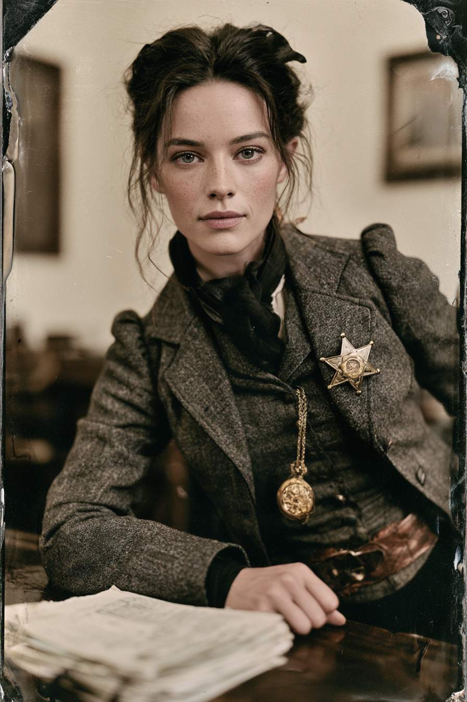

Archetyp: TERRITORIAL RANGER (Territorialer Ranger)
„Ich brauche kein Geständnis. Ich brauche, dass Sie ungefähr vier Minuten lang über irgendwas reden.“
| Agility | d6 | 1 |
| Smarts | d8 | 2 |
| Spirit | d6 | 1 |
| Strength | d4 | 0 |
| Vigor | d6 | 1 |
| Skill | Attr. | Die | Pts. |
|---|---|---|---|
| Fighting | Agi | d6 | 2 |
| Shooting | Agi | d6 | 2 |
| Riding | Agi | d6 | 2 |
| Intimidation | Spi | d6 | 2 |
| Notice | Sma | d6 | 1 |
| Persuasion | Spi | d6 | 1 |
| Research | Sma | d6 | 2 |
| Survival | Sma | d4 | 1 |
Hintergrund. Im Winter ’77 brannte die Kroll-Farm bei Socorro mit Mutter, Vater und zwei Brüdern darin ab, und die Untersuchung des Territoriums befand auf einen Unfall mit dem Ofen — einem Ofen, den Addie drei Stunden zuvor eigenhändig abgedeckt hatte. Sie war vierzehn, klein, und niemand hörte ihr zu, also verbrachte sie die nächsten sechs Jahre damit, jemand zu werden, dem man zuhört: zwei Saisons als Schreiberin bei einem Bezirksrichter, eine als Gefängnisaufseherin, und sehr viel Übung in der speziellen Kunst, einen Mann glauben zu machen, man wisse es ohnehin schon. Sie trat ’83 bei den Rangers ein, aus genau einem Grund: das Hauptquartier der Kompanie B in Santa Fe verwahrt die versiegelten Untersuchungsakten, und ein Feldranger mit Stern und plausibler Besorgung kommt an einem Registraturbeamten vorbei. Die Posse weiß, dass sie einen Stern trägt — sie haben sie ihn benutzen sehen. Sie wissen nicht, dass sie nie eine Versetzung aus New Mexico beantragt hat, und sie wissen nicht, was sie aus jedem Bezirksgericht mitnimmt, das sie besucht.
Build. Geschicklichkeit W6, Verstand W8, Geist W6, Stärke W4, Konstitution W6 · Parade 5, Robustheit 5 (7 mit gepanzertem Korsett) Kämpfen W6, Schießen W6, Reiten W6, Einschüchtern W6, Bemerken W6, Überreden W6, Nachforschen W6, Überleben W4 Talente: Territorial Ranger (Territorialer Ranger), Menacing (Bedrohlich — freigeschaltet durch Skrupellos; mit dem Stern interrogiert sie effektiv auf W6+3) Handicaps: Secret (Geheimnis) — Major: sie entfernt und ersetzt seit über einem Jahr Seiten aus amtlichen Akten. Entdeckung bedeutet mindestens Entlassung, schlimmstenfalls Yuma — und sie würde jedem Verteidiger im Territorium einen Grund liefern, jeden Fall zu kippen, den sie je angefasst hat. · Ruthless (Skrupellos) — Minor: sie benutzt die Kinder eines Mannes als Hebel im Verhör. Sie hat hinterher ein schlechtes Gewissen. Sie tut es wieder. · Curious (Neugierig) — Minor: sie kann keine verschlossene Schublade in Ruhe lassen. Genau der Fehler, der sie zur guten Ermittlerin gemacht hat, und genau der, der sie auffliegen lassen wird. Handicap-Punkte: 2 → ein Talent, 1 → ein Fertigkeitspunkt, 1 → +500 Dollar. Ausrüstung: Bei Stärke W4 gegen Mindeststärke W6 würde ihr der Reitermantel auf jede Geschicklichkeits- und Stärkeprobe Abzüge einbringen — er bleibt hinter dem Sattel gerollt, und sie trägt stattdessen ein leichtes gepanzertes Korsett unter einem geschneiderten grauen Mantel. Abgesägte Doppelflinte unter dem Mantel, Colt Lightning .38, Taschenderringer, Handschellen, die goldene Uhr ihres Vaters. Rund 550 Dollar hält sie flüssig — eine Bestechungskasse, und sie ist die einzige Rangerin der Kompanie B, die eine hat.
Aufhänger. Der Name, den sie sich ein Jahr lang still aus gestohlenen Seiten zusammengesetzt hat, ergibt endlich einen Sinn — und er gehört einem diensthabenden Ranger-Offizier, einem der beiden Leutnants der Kompanie B. Er ist der Mann, der Kapitel 13 verwahrt. Er ist außerdem nach jedem Maßstab gut in seinem Beruf: er hat drei Abscheulichkeiten persönlich erledigt, und sein Bezirk hat das niedrigste Furchtlevel im Territorium. Addie muss nun entscheiden, ob die Rangers die Maschine sind, die ihre Familie getötet hat, oder das Einzige, was zwischen dem Territorium und der Dunkelheit steht — und ob sie beides sein kann. Ihr Geheimnis schneidet in beide Richtungen: bewegt sie sich gegen ihn, wird alles Gestohlene zum Beweismittel gegen sie.
Warum es Spaß macht. Sie ist der Schlüssel des Tisches für Türen, die keine Schrotflinte öffnet — die, die den Sheriff zum Reden und den Beamten zum Schwitzen bringt. Der Reiz liegt in der Spannung: jede Sitzung spielt sie die ehrliche Gesetzeshüterin überzeugend genug, dass die Posse nie nachfragt, während der Marshal genau weiß, wie viel davon Vorstellung ist — und sie langsam merkt, dass sie den Stern lieber mag, als sie vorhatte.
Regelgrundlage: Regelnotizen · Archetyp-Notizen